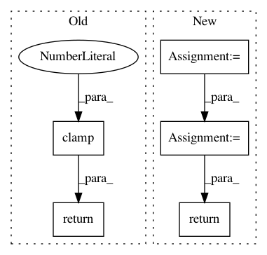

1a73a1367fedfa8368b6c42103e60e1b370bc14a,catalyst/contrib/criterion/focal_loss.py,FocalLoss,forward,#FocalLoss#Any#Any#,11
Before Change
f"Got ({targets.size()}) and ({outputs.size()})"
)
max_val = (-outputs).clamp(min=0)
log_ = ((-max_val).exp() + (-outputs - max_val).exp()).log()
loss = outputs - outputs * targets + max_val + log_
invprobs = F.logsigmoid(-outputs * (targets * 2.0 - 1.0))
loss = (invprobs * self.gamma).exp() * loss
return loss.sum(dim=1).mean()
After Change
:param targets: [bs; num_classes]
:return:
num_classes = logits.size(1)
loss = 0
targets = targets.view(-1)
logits = logits.view(-1, num_classes)
for cls in range(num_classes):
// Filter anchors with -1 label from loss computation
if cls == self.ignore:
continue
cls_label_target = targets[..., cls].long()
cls_label_input = logits[..., cls]
loss += sigmoid_focal_loss(
cls_label_input,
cls_label_target,
gamma=self.gamma,
alpha=self.alpha
)
return loss
__all__ = ["FocalLossBinary", "FocalLossMultiClass", "FocalLossMultiLabel"]
In pattern: SUPERPATTERN
Frequency: 4
Non-data size: 5
Instances
Project Name: Scitator/catalyst
Commit Name: 1a73a1367fedfa8368b6c42103e60e1b370bc14a
Time: 2019-04-19
Author: scitator@gmail.com
File Name: catalyst/contrib/criterion/focal_loss.py
Class Name: FocalLoss
Method Name: forward
Project Name: cornellius-gp/gpytorch
Commit Name: 8c40ed8fb56baef7ab5ce8d5ed85bb10e4f09174
Time: 2020-12-16
Author: wjm363@nyu.edu
File Name: gpytorch/lazy/kronecker_product_lazy_tensor.py
Class Name: KroneckerProductLazyTensor
Method Name: root_decomposition
Project Name: rusty1s/pytorch_geometric
Commit Name: 45a03ac258234ba49c0a43d46ae022493190591e
Time: 2019-03-26
Author: matthias.fey@tu-dortmund.de
File Name: torch_geometric/nn/models/autoencoder.py
Class Name: GAE
Method Name: loss
Project Name: facebookresearch/pytext
Commit Name: 78c4f927b3041914694399b5532ac532d8967114
Time: 2019-02-26
Author: mikaell@fb.com
File Name: pytext/loss/loss.py
Class Name: KLDivergenceCELoss
Method Name: __call__